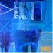
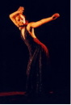
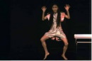
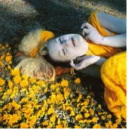

“Mandala” is an annual international performing art & contemporary dance festival. This year, it celebrates its 3rd edition and continues to bring together the works that transcend both traditional dance form and overdetermined cultural boundaries.
Here is the full programme:
19.04.2007 (Thursday)
17:00 // Aula Akademii Sztuk Pięknych (pl. Polski 3/4)
¶ The opening reception of the exhibition by
Alain Gaudebert (FR) [view the video]
20:00 // Scena Kalambur (ul. Kuźnicza 29a)
¶ dance performance by:
Niezależna Manufaktura Taneczna
Ewelina Niewiadowska i Artur Borkowski [view the video]
Bożena Eltermann
20.04.2007 (Friday)
17:00 // Galeria Miejska (ul. Kiełbaśnicza 28)
¶ performance by Wojciech Skowronek (Grupa Ariergarda)
20:00 // Scena Kalambur
¶ Multimedia - Performance - Butoh:
Minako Seki (JP/DE)
Jacek Zachodny (Projekt multimedialny Śmierć XXI)
21.04.2007 (Saturday)
17:00 // Galeria Miejska
¶ performance by:
Slava Inozemcev (BY)
Anna Biernacka
Olga Kugacz
22.04.2007 (Sunday)
14:00 // Galeria Miejska
¶ performance by:
Raman Tratsiuk (BY)
Volga Maslouskaya (BY)
Su-En (SE)
Krzysztof “Leon” Dziemaszkiewicz
Sylwia Hanff
23.04.2007 (Monday)
17:00 // Galeria Miejska
¶ The opening of the exhibition by:
Art Brut (artists from Breda, NL - Ylona, Ylonka Jaspers, Corrie Koch, Olga van Dongen, Corry Mol, Hermann Laarhoven, Maria Rombouts)
Maud Quaedvlieg (NL)
¶ “Breda w obiektywie” - the photo presentation at the occasion of Breda Day in Wrocław (photos by Wessel Keizer)
Exhibition till 25.04.2007
24.04.2007 (Tuesday)
17:00 // Galeria Miejska
¶ “Tak my żyjemy, żegnając się wiecznie” (R.M.Rilke) - Installation by Magdalena Hetman & Zuzanna Sakowski
¶ performance by:
Angelika Fojtuch
Johannes Deimlling (DE)
18:00 // Galeria Entropia (ul. Rzeźnicza 4)
¶ performance:
“Post Tatau. Rzecz o współczesnych misteriach” (project: Agnieszka Młotkowski / performance : Kuba Bielawski)
20:30 // Firlej (ul. Grabiszyńska 56)
¶ performance:
“Czekając na … ” (”Waiting for … “) - Joanna Potkowska, Ewa Staroń, Izabela Walkowiak, Stan Michalak
dir.Yola Wesołowska
¶ concert:
Ziemia Planeta Ludzi (Ethno/Free-Jazz: Piotr Łyszkiewicz, Janek Słowiński & Michał Karbowski)
Free admission for all performance and events


{kind=link}